Twenty-five Elf on the Shelf ideas that look magical without turning the kitchen into a Christmas crime scene sounds like a reasonable ask. The tradition is genuinely fun, but nobody wants to spend two hours at midnight building an elaborate elf zipline when tomorrow starts at 6:30 a.m.
The best setups create a little surprise without requiring a craft degree. Simple scenes often get the biggest reactions, since kids care more about discovering what their elf did overnight than the amount of work that went into it.
So grab the elf, raid the junk drawer, and let this Christmas tradition be fun instead of another nightly chore.

How Do Elf on the Shelf Ideas Actually Work?
Every night, the elf moves to a new location or gets set up inside a small scene. The kids then discover it in the morning.
That sounds simple enough, until December 17 rolls around and there's suddenly no idea left for what the elf should do next.
Easy ideas that use things already sitting around the house solve that problem fast. Paper, cereal, toilet paper, toys, books, marshmallows, and basic Christmas decorations can build dozens of different scenes on their own.
Quick ideas, crafts, recipes, and classroom activities all count as fair game too.
None of it needs to look Pinterest-worthy every single night. A five-minute setup, done occasionally, actually makes the whole tradition easier to enjoy long-term.
Now for the fun part.
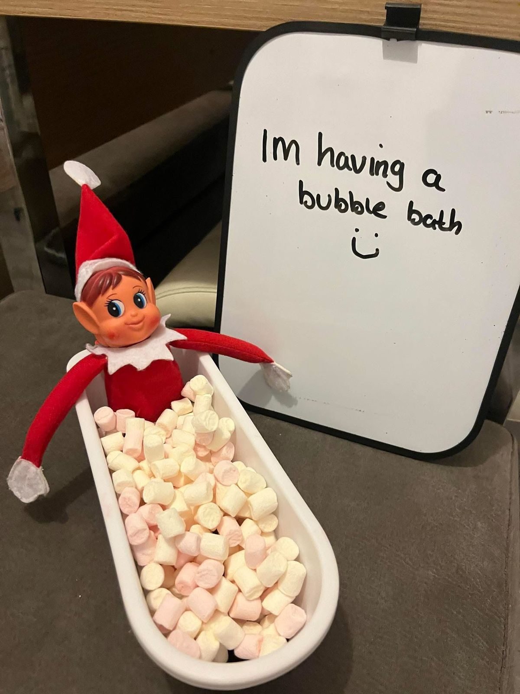
What Is the Elf on the Shelf Tradition, Exactly?
The tradition centers on a Scout Elf who joins a family for the Christmas season. The idea is that Scout Elves fly back to the North Pole each night and return to a new hiding spot before the family wakes up.
That simple premise is really the whole game. Kids wake up, search the house, and try to figure out exactly where their elf landed overnight.
A few loose rules come along with it too: read the story together, give the elf a name, avoid touching the elf directly, and expect the elf to head back to the North Pole for good on Christmas Eve.
Scout Elves supposedly can't talk, but they're meant to be excellent listeners. That part of the tradition actually works in its favor. The elf doesn't need to perform some elaborate stunt every night. A child's imagination ends up doing most of the actual work.
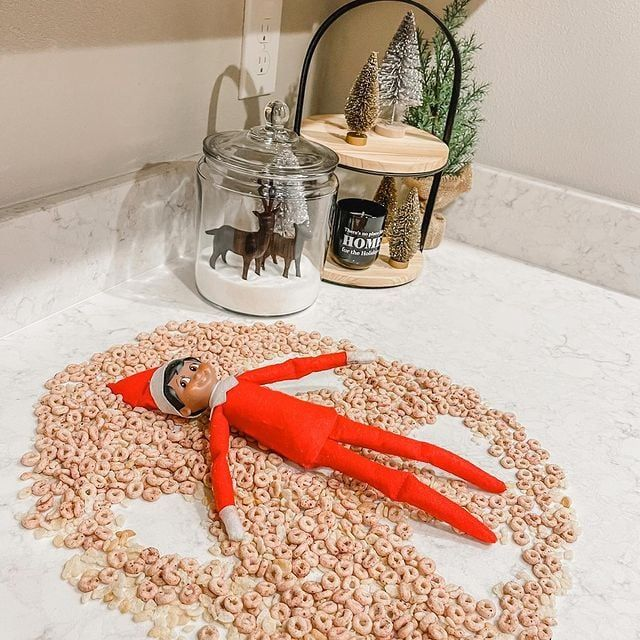
25 Elf on the Shelf Ideas for a Magical Christmas
1. Elf Leaves a Goodbye Letter
For the final night, set the elf beside a handwritten goodbye letter.
Thank the kids for the fun, mention a few favorite moments from the month, and remind them that the Christmas magic doesn't actually have to disappear just because the elf leaves.
A tiny suitcase next to the elf near the tree finishes the scene. Tonight being Christmas Eve is really the whole emotional weight of this one, and it lands far better than simply moving the elf away and hoping nobody notices it's gone.
2. Elf Packs a Suitcase
Place the elf beside a tiny vintage suitcase and a mini hot air balloon.
Write a note that says something like, "See you next year! Love, your elf."
This idea works especially well as Christmas Eve approaches, since the elf is genuinely due to head back to the North Pole around then anyway, miniature roller bag and all.
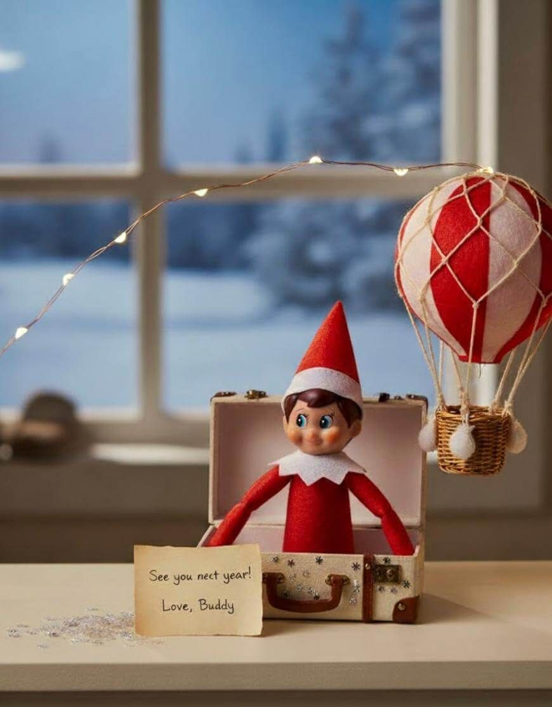
3. Elf Has a Dance Party
Pose the elf mid-dance move beside a friend in front of the Christmas tree, under a hanging disco ball ornament.
Turn on Christmas music the moment the kids wake up.
Holiday music works just as well for an impromptu living room dance party as it does for car rides or kitchen karaoke.
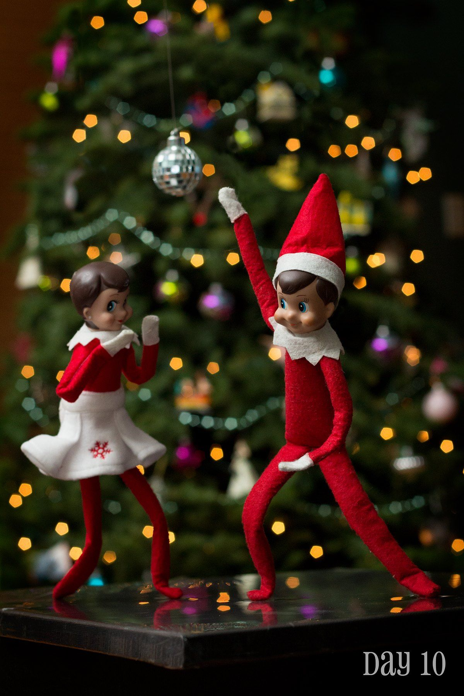
4. Elf Gets Into the Cookie Jar
Tip the elf upside down into a glass cookie jar, legs sticking straight up, with a cookie in hand and crumbs scattered around the base.
Add one short note tucked beside the jar.
- "I regret nothing."
That one line does most of the work on its own.
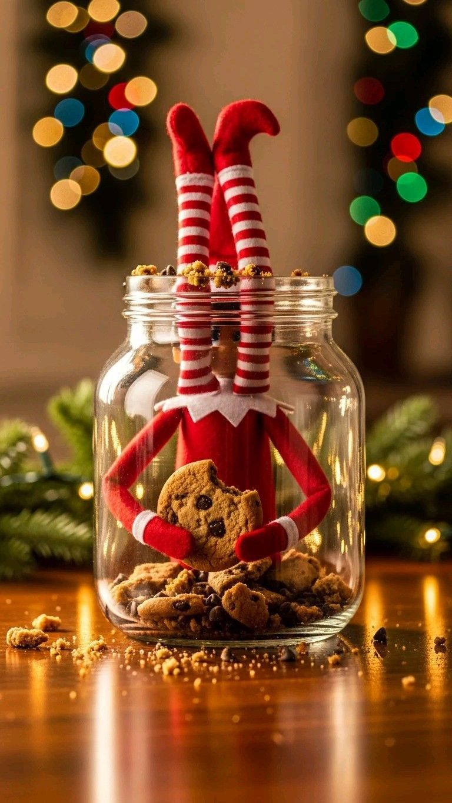
5. Elf Writes a Nice List
Give the elf a candy cane pen and a letter addressed "Dear Santa."
Have the elf mention a few genuinely kind things the kids did recently, right alongside the usual Christmas wish list. A few examples work well:
- Helped clean up
- Shared a toy
- Helped someone
- Used kind words
Using the elf to celebrate actual kindness, rather than purely as a behavior monitor, tends to land a lot better with kids than pure surveillance ever does.
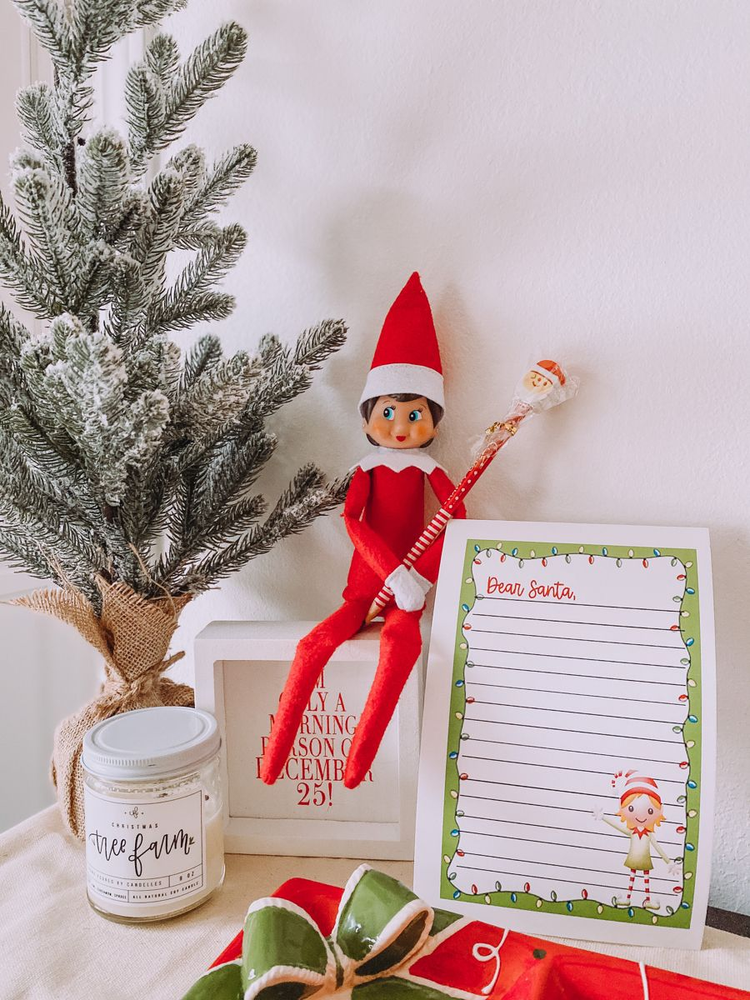
6. Elf Paints a Mini Masterpiece
Set up a tiny easel with a small canvas and a few dabs of paint.
Sit the elf in front of it holding a paintbrush, surrounded by scattered paint splotches, as though they spent the whole night working on their masterpiece.
Letting the kids add the finishing touches the next morning turns the scene into actual playtime instead of something they just look at.
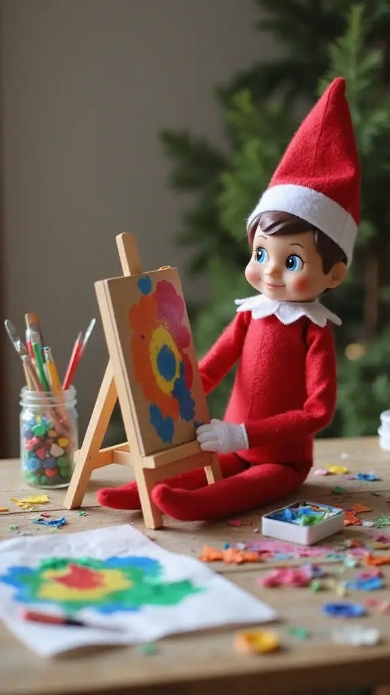
7. Elf Goes Fishing
Scatter a handful of goldfish crackers over a bit of fake snow on a plate or tray.
Give the elf a tiny fishing pole and prop up a sign that says something like, "Just doin' some fishin', hope I catch a big one!"
A few tiny paper fish taped to the string pushes the scene a little further, if there's time for it.
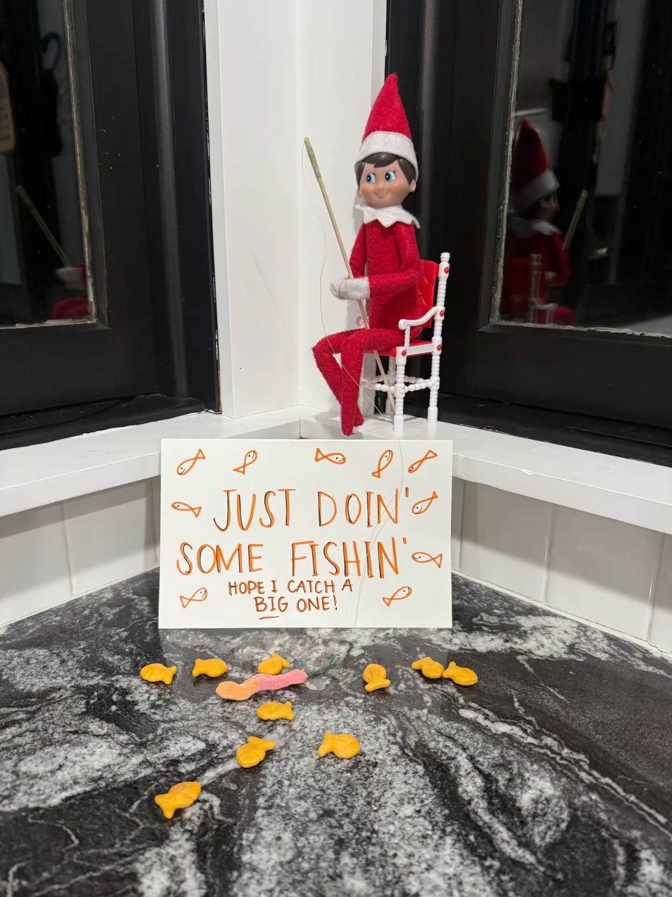
8. Elf Makes a Bathroom Mirror Message
Write a few short messages on the bathroom mirror using a washable marker.
Something like, "Be Good! Santa's Watching. Elfie Was Here." covers the tone perfectly.
Place the elf near the sink with the marker beside them, and keep the messages short, using a marker that actually washes off easily. Nobody needs a permanent Christmas greeting on the bathroom mirror.
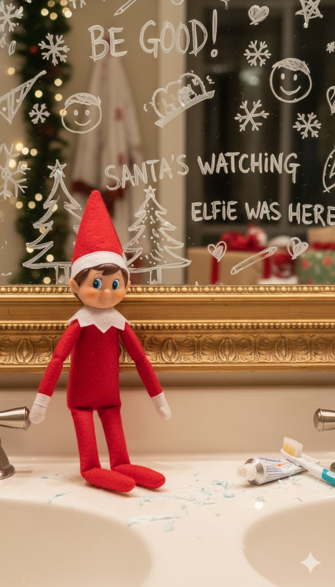
9. Elf Has a Snowball Fight
Use cotton balls as fake snowballs.
Put the elf on one side of the room and several stuffed animals on the other, then scatter cotton balls between them.
That's a miniature Christmas battle without covering the entire house in actual snow. Unless cleaning snow off the carpet is somehow appealing, in which case, carry on.
10. Elf Creates a Christmas Countdown
Give the elf a paper countdown made of small numbered envelopes, tucked into a cozy blanket by the fireplace.
Place the elf beside whichever number matches the current date.
Letting the kids cross off each day themselves makes the countdown genuinely interactive, built from nothing more than paper, string, and a bit of decorating.
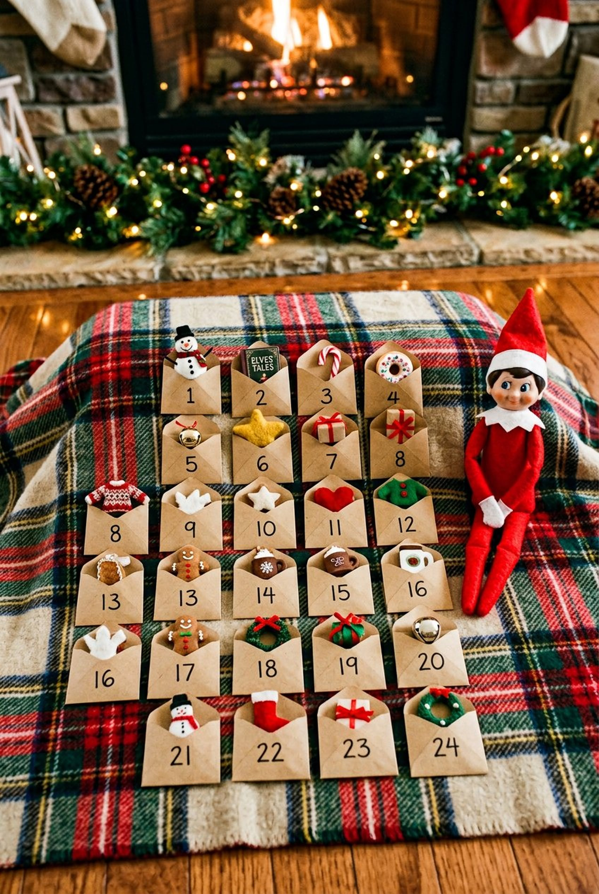
11. Elf Gets Wrapped Like a Present
Give the elf a marker and let them "help" wrap presents by labeling the gift tags under the tree.
Write something like "To: The Family, From: The North Pole" on one of the tags.
This idea works especially well during the final week before Christmas, once the pile of presents really starts to grow.
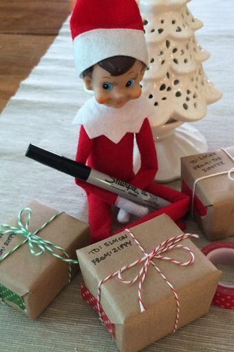
12. Elf Has a Pancake Breakfast
Sit the elf beside a plate of pancakes topped with syrup and sprinkles, wearing a tiny chef's hat.
Prop up a sign nearby that reads something like, "How do Santa's elves eat pancakes..."
A note asking the family to actually make pancakes together that morning turns the joke into a real activity.
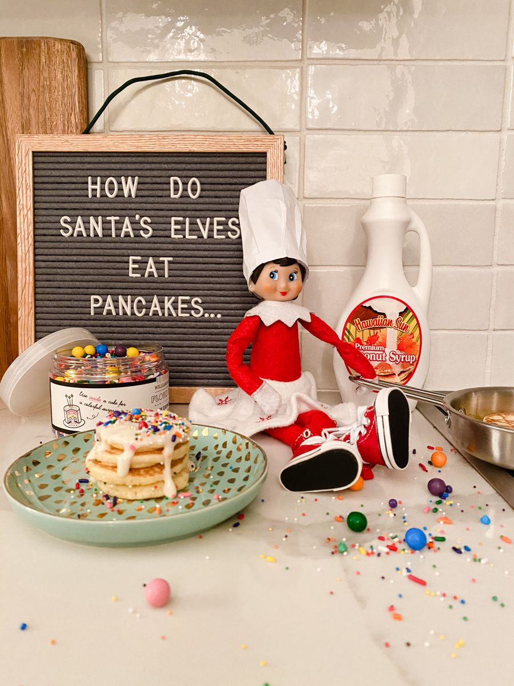
13. Elf Builds a Candy Cane Fence
Tie candy canes together with ribbon to build a miniature cage or fence around the elf.
Place small toys inside the enclosed area and pretend the elf built a tiny Christmas garden or playground overnight.
Pretzel sticks work just as well for a similar miniature fence, if candy canes aren't on hand, a reindeer corral built the same way is an easy variation.
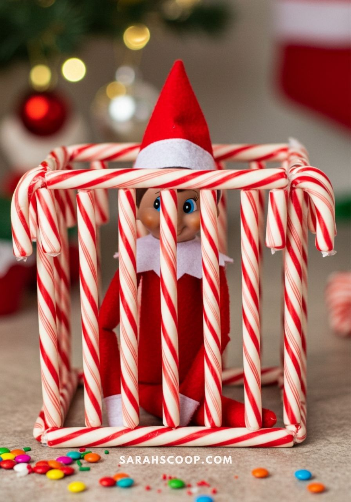
14. Elf Plays Hide and Seek
Hide the elf somewhere unexpected but safe.
Leave a handwritten checklist of a few toys for the kids to track down, signed from the elf.
This idea works particularly well for younger children, since the search itself becomes part of the whole tradition, echoing the elf's actual nightly trips back and forth to the North Pole.
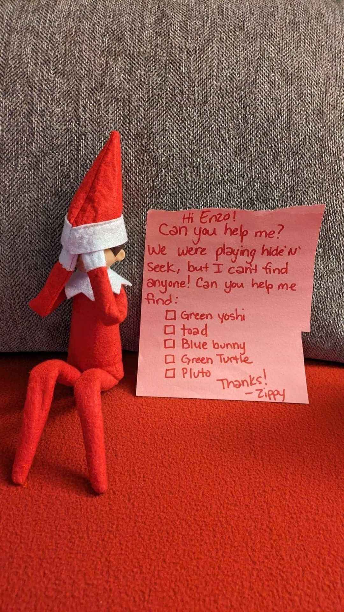
15. Elf Gets Tangled in Christmas Lights
Wrap a short strand of unplugged Christmas lights loosely around the elf.
Place them near the Christmas tree with a suitably confused expression.
Keep the lights unplugged for this one. The elf can handle the comedy on their own; nobody needs an actual electrical problem joining the storyline.
16. Elf Takes a Bubble Bath
Fill a small toy bathtub or clawfoot dish with mini marshmallows instead of bubbles.
Sit the elf inside as though they're taking a genuinely luxurious bubble bath, then add a rubber duck and a tiny folded towel beside the tub.
This might be one of the best funny setups on the whole list, since it takes almost no effort but looks hilarious every single time.
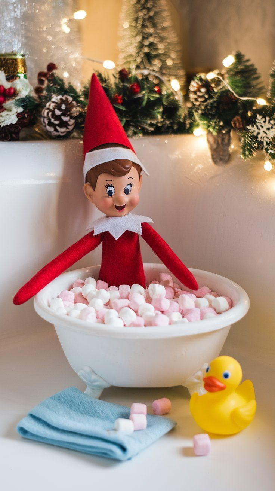
17. Elf Writes a Christmas Bucket List
Give the elf a small piece of paper with a handwritten Christmas bucket list.
Simple activities cover it well:
- Bake cookies
- Watch a Christmas movie
- Decorate the tree
- Drink hot chocolate
- See Christmas lights
- Build a gingerbread house
Completing one activity each day turns the list into an actual shared countdown rather than just a piece of paper sitting there.
18. Elf Builds a Marshmallow Igloo
Stack mini marshmallows into a small igloo shape and dust the whole scene with powdered sugar snow.
A few tiny footprints leading up to the entrance finish the scene, as though the elf's been working on their igloo all night.
This type of setup works well because the elf becomes part of an actual little story, rather than just sitting somewhere random on a shelf.
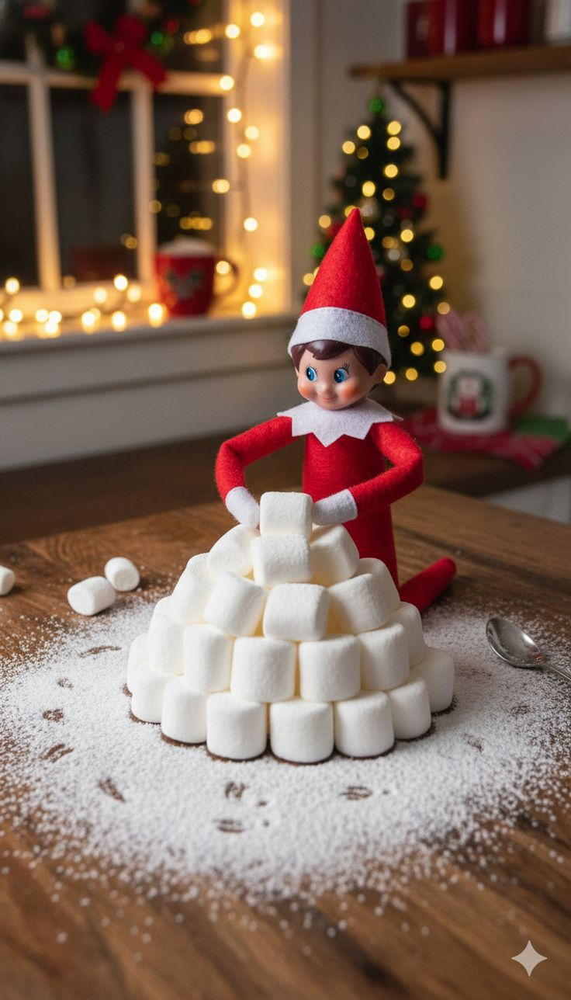
19. Elf Makes a Snow Angel
Sprinkle a small amount of flour or powdered sugar onto a clean, dark surface so the shape shows up clearly.
Lay the elf down and gently sweep their arms and legs through it to form a snow angel.
The result looks surprisingly convincing without requiring much actual work at all.
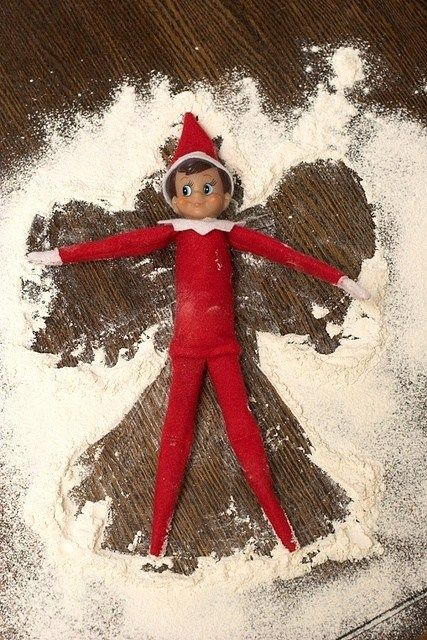
20. Elf Hides in the Fridge
Stick googly eyes on anything in the fridge that will hold one, fruit, yogurt cups, juice bottles, even the egg carton.
Tuck the elf in among them with a sign that says, "We've got our eyes on you!"
This idea takes less than a minute but creates a fun little surprise every time the fridge door opens. Skip it if the fridge has shelves or food that could create a hygiene problem, and keep the elf near a clean, dry area instead.
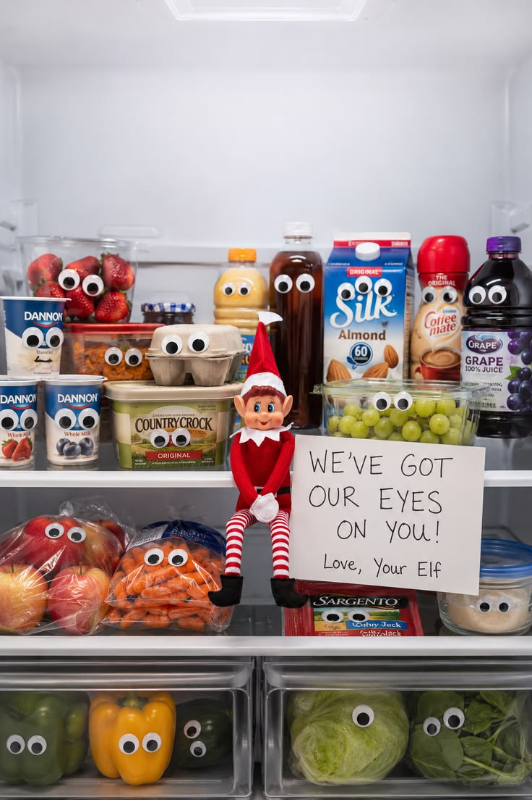
21. Elf Reads a Bedtime Story
Sit the elf on top of a small stack of children's books.
Tuck a tiny handwritten note into the elf's hands recommending one of the titles for that night's bedtime story.
This setup feels sweet rather than mischievous, which makes it a strong choice for quieter nights.
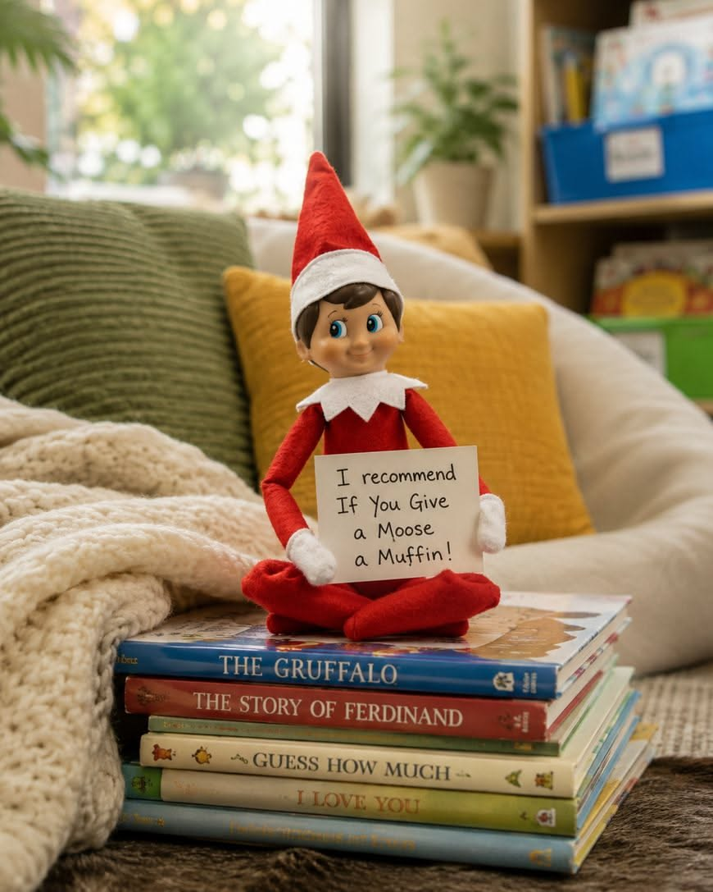
22. Elf Creates a Toilet Paper Snowman
Wrap a small amount of toilet paper around a couple of household objects to create a tiny snowman scene.
Give the snowman paper eyes, a carrot-shaped nose, and a little scarf.
Position the elf beside it as though they spent the entire night building their masterpiece, just keep the toilet paper intact enough that it doesn't turn into a morning disaster.
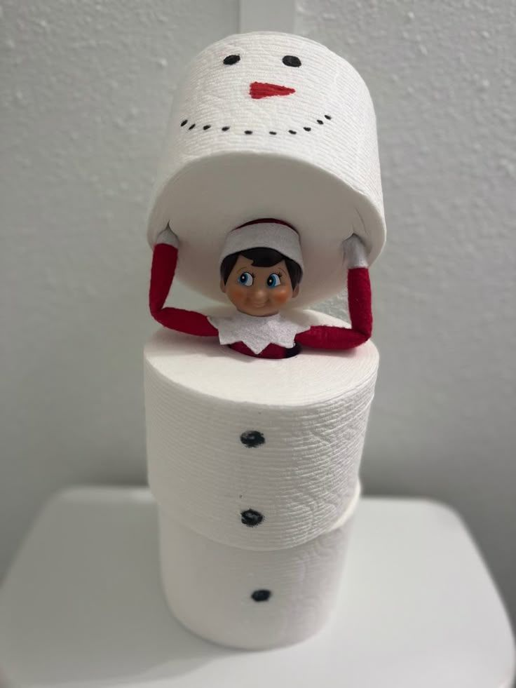
23. Elf Has a Movie Night
Tuck the elf into a popcorn box with a tiny remote control in hand.
Surround them with a few mini candy boxes and leave a note that says, "Let's have a family movie night! Pick out a Christmas movie to watch together!"
Turning the elf's prank into an actual family activity works especially well here, since Christmas movies, baking cookies, decorating the tree, and looking at lights are exactly the kind of shared activities the whole tradition is built around anyway.
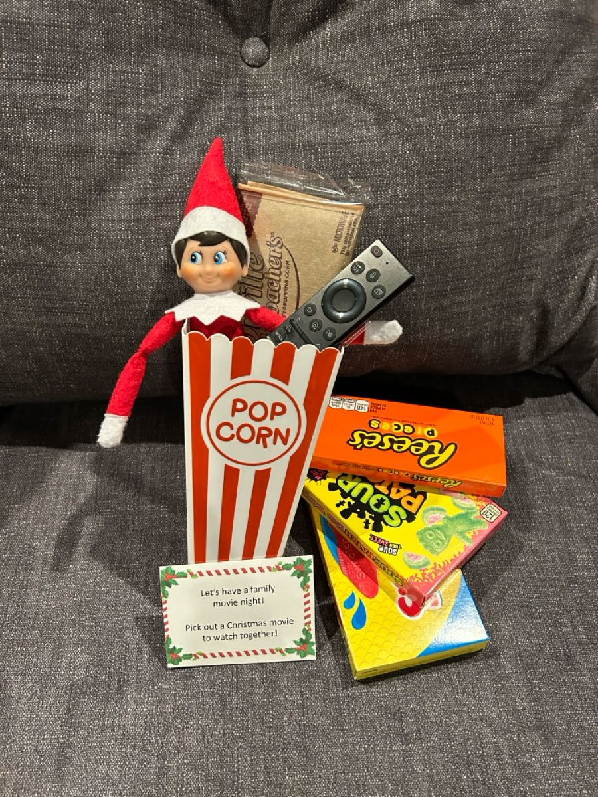
24. Elf Gets Stuck in a Christmas Tree
Stand the elf beside the Christmas tree, reaching into the branches as though they got a little too curious about an ornament.
Add a tiny sign saying, "I was looking for the perfect spot!"
This idea works especially well once the tree already has plenty of decorations on it, since the elf naturally blends right into the scene.
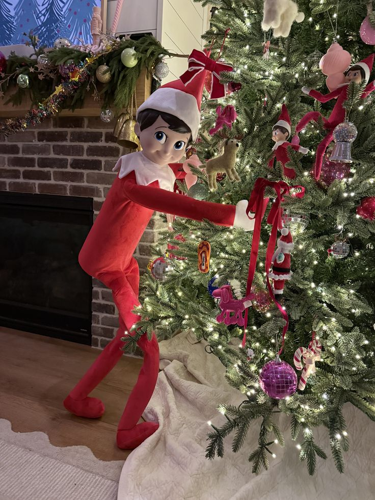
25. Elf Makes a Cereal Mess
Scatter a little cereal and a handful of mini marshmallows around the elf on a counter or table.
- Cereal
- Mini marshmallows
- Small cup
- Napkin
Add a small cup of milk and a napkin beside them, as though the elf helped themselves to a very messy midnight snack.
Kids usually don't need a complicated story when the visual already tells one on its own. Keep the mess small, though. The goal is Christmas magic, not a breakfast cleanup operation the next morning.
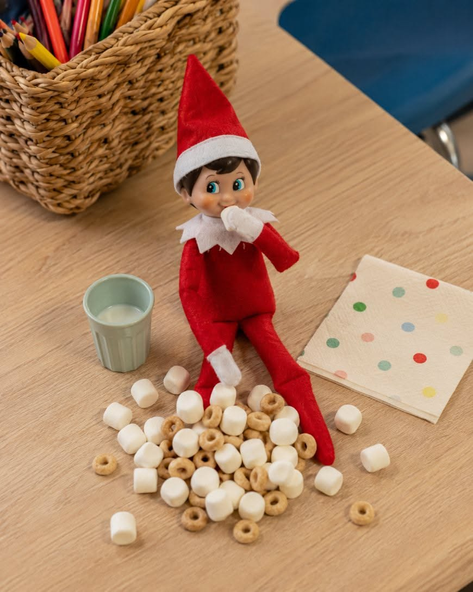
My Favorite Approach to Elf on the Shelf Ideas
Building an entire month of setups doesn't actually call for twenty-five complicated scenes.
Rotating between three types works better:
- Funny scenes: cereal disasters, cookie stealing, and toilet paper snowmen
- Sweet scenes: reading books, writing kind notes, and preparing Christmas activities
- Interactive scenes: scavenger hunts, countdowns, games, and family challenges
That rotation keeps the tradition interesting without anyone needing to become a full-time Christmas production manager. And honestly, who actually has time for that?
Should the Elf Move Every Single Night?
The traditional version expects the elf to move to a new spot each night, since it supposedly travels to the North Pole and back before morning.
An elaborate scene every single night was never actually required, though. Sometimes simply moving the elf from a bookshelf to the kitchen counter works perfectly fine.
Other nights can get the bigger scene, whenever there's actually the energy for one. Consistency matters more than complexity here. Elaborate setups are great for families who enjoy them, and simple ones are just as valid for families who'd rather keep it that way. Both quick ideas and more creative setups are equally legitimate versions of the same tradition.
How to Make the Whole Thing Easier on Yourself
The biggest mistake with this tradition is trying to make every single night spectacular.
That pressure was never actually necessary. Some nights can feature a hilarious scene with toys everywhere. Other nights can just feature the elf sitting beside a Christmas book.
A small elf emergency box, kept somewhere in a closet, is worth having stocked and ready:
- Mini notes
- Washable markers
- Ribbon
- Cotton balls
- Candy canes
- Small toys
- Paper
- Tape
- Marshmallows
- Christmas stickers
That little box can save the whole night at 11:47 p.m. when it suddenly becomes clear the elf still needs to move. And yes, that happens.
Final Thoughts on These 25 Elf on the Shelf Ideas
The best Elf on the Shelf ideas don't actually involve the most decorations, the biggest mess, or the most elaborate setup.
They create one tiny moment of surprise.
The elf can get tangled in Christmas lights one night, read a book to stuffed animals the next, and sit quietly beside the Christmas tree after that. That's genuinely enough.
Use these twenty-five ideas as a starting point, then adjust them to match the family's actual personality. Make the elf silly for kids who love jokes. Make the elf sweet for kids who enjoy little notes. Turn the elf into an excuse for more family time whenever that feels like the better move.
And on the night the elf gets completely forgotten? Blame Santa's GPS. It happens to the best of us.
The whole tradition works best when it feels like a game the family is in on together, not one more task competing with everything else December already demands.